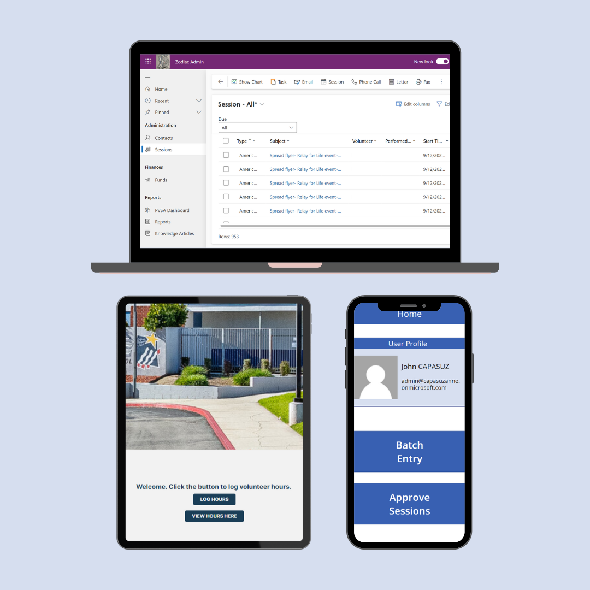

Zodiac System
Sub-Group Lead, Website Design Lead
Deployed and Currently Used by Non-Profit
created a system to track volunteer hours (PVSA) with three aspects: website database, moblie app data entry and data management for board members, website data entry for members
built using: microsoft powerplatform, powerpages, html, css, javascript, powerfx (microsoft's coding language)
learn more about Zodiac Admin!